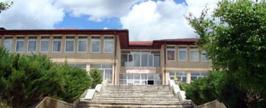
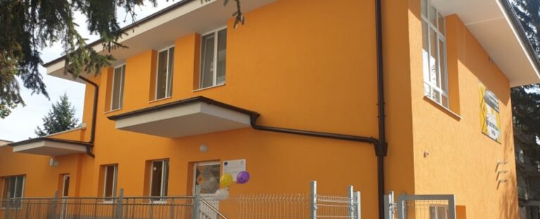

Добре дошли!
СУ „Св. св. Кирил и Методий“ – Велинград е училище с традиции, отговорност и устрем към бъдещето. Разположено сред красивата природа на Родопите, нашето училище предлага качествено образование и разнообразни възможности за развитие на учениците.
🏢 Основна сграда (5 – 12 клас)
Най-голямата сграда на училището се използва за ученици от 5-ти до 12-ти клас. Тук се провеждат основните учебни и извънкласни дейности за прогимназия и гимназия.

🏫 Средна сграда (1 – 4 клас)
В нея учат учениците от начален етап – от 1-ви до 4-ти клас. Средата е подходяща за малките ученици с уютни класни стаи и подходяща учебна среда.

👶 Детска градина
Сградата на детската градина е част от училищния комплекс и понякога се използва и за първокласници. Тя е удобно оборудвана за най-малките ученици и предлага спокойна и защитена среда.